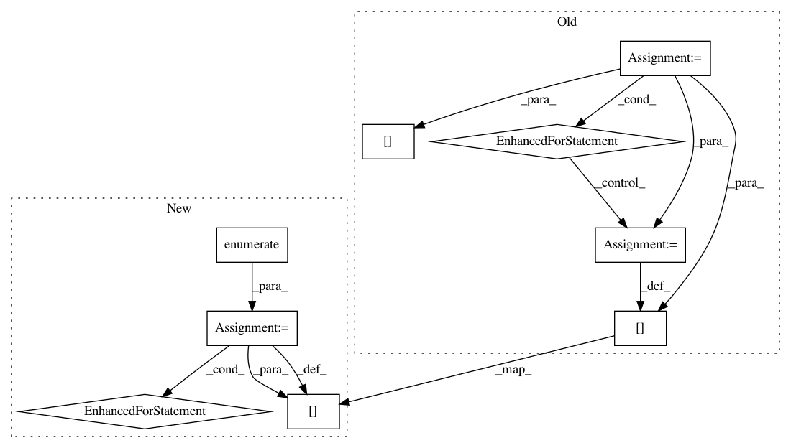

b0bdcbfdabcae1933980925c8f2438cbb2359a49,imgaug/augmenters/geometric.py,ElasticTransformation,_augment_keypoints,#ElasticTransformation#Any#Any#Any#Any#,3311
Before Change
nb_images = len(keypoints_on_images)
rss, alphas, sigmas, _orders, _cvals, _modes = self._draw_samples(
nb_images, random_state)
for i in sm.xrange(nb_images):
kpsoi = keypoints_on_images[i]
if not kpsoi.keypoints:
// ElasticTransformation does not change the shape, hence we can
// skip the below steps
continue
h, w = kpsoi.shape[0:2]
dx, dy = self.generate_shift_maps(
kpsoi.shape[0:2],
alpha=alphas[i],
sigma=sigmas[i],
random_state=rss[i]
)
kps_aug = []
for kp in kpsoi.keypoints:
// dont augment keypoints if alpha/sigma are too low or if the
// keypoint is outside of the image plane
params_above_thresh = (
alphas[i] > self.KEYPOINT_AUG_ALPHA_THRESH
and sigmas[i] > self.KEYPOINT_AUG_SIGMA_THRESH)
within_image_plane = (0 <= kp.x < w and 0 <= kp.y < h)
if not params_above_thresh or not within_image_plane:
kps_aug.append(kp)
else:
kp_neighborhood = kp.generate_similar_points_manhattan(
self.NB_NEIGHBOURING_KEYPOINTS,
self.NEIGHBOURING_KEYPOINTS_DISTANCE,
return_array=True
)
// We can clip here, because we made sure above that the
// keypoint is inside the image plane. Keypoints at the
// bottom row or right columns might be rounded outside
// the image plane, which we prevent here. We reduce
// neighbours to only those within the image plane as only
// for such points we know where to move them.
xx = np.round(kp_neighborhood[:, 0]).astype(np.int32)
yy = np.round(kp_neighborhood[:, 1]).astype(np.int32)
inside_image_mask = np.logical_and(
np.logical_and(0 <= xx, xx < w),
np.logical_and(0 <= yy, yy < h)
)
xx = xx[inside_image_mask]
yy = yy[inside_image_mask]
xxyy = np.concatenate(
[xx[:, np.newaxis], yy[:, np.newaxis]],
axis=1)
xxyy_aug = np.copy(xxyy).astype(np.float32)
xxyy_aug[:, 0] += dx[yy, xx]
xxyy_aug[:, 1] += dy[yy, xx]
med = ia.compute_geometric_median(xxyy_aug)
// uncomment to use average instead of median
// med = np.average(xxyy_aug, 0)
kps_aug.append(kp.deepcopy(x=med[0], y=med[1]))
result[i] = kpsoi.deepcopy(keypoints=kps_aug)
return result
def _augment_polygons(self, polygons_on_images, random_state, parents,
hooks):
After Change
result = keypoints_on_images
nb_images = len(keypoints_on_images)
samples = self._draw_samples(nb_images, random_state)
gen = enumerate(zip(keypoints_on_images, samples.alphas, samples.sigmas,
samples.orders, samples.random_states))
for i, (kpsoi, alpha, sigma, order, random_state_i) in gen:
if not kpsoi.keypoints:
// ElasticTransformation does not change the shape, hence we can
// skip the below steps
continue
h, w = kpsoi.shape[0:2]
dx, dy = self._generate_shift_maps(
kpsoi.shape[0:2],
alpha=alpha,
sigma=sigma,
random_state=random_state_i
)
kps_aug = []
for kp in kpsoi.keypoints:
// dont augment keypoints if alpha/sigma are too low or if the
// keypoint is outside of the image plane
params_above_thresh = (
alpha > self.KEYPOINT_AUG_ALPHA_THRESH
and sigma > self.KEYPOINT_AUG_SIGMA_THRESH)
within_image_plane = (0 <= kp.x < w and 0 <= kp.y < h)
if not params_above_thresh or not within_image_plane:
kps_aug.append(kp)
else:
kp_neighborhood = kp.generate_similar_points_manhattan(
self.NB_NEIGHBOURING_KEYPOINTS,
self.NEIGHBOURING_KEYPOINTS_DISTANCE,
return_array=True
)
// We can clip here, because we made sure above that the
// keypoint is inside the image plane. Keypoints at the
// bottom row or right columns might be rounded outside
// the image plane, which we prevent here. We reduce
// neighbours to only those within the image plane as only
// for such points we know where to move them.
xx = np.round(kp_neighborhood[:, 0]).astype(np.int32)
yy = np.round(kp_neighborhood[:, 1]).astype(np.int32)
inside_image_mask = np.logical_and(
np.logical_and(0 <= xx, xx < w),
np.logical_and(0 <= yy, yy < h)
)
xx = xx[inside_image_mask]
yy = yy[inside_image_mask]
xxyy = np.concatenate(
[xx[:, np.newaxis], yy[:, np.newaxis]],
axis=1)
xxyy_aug = np.copy(xxyy).astype(np.float32)
xxyy_aug[:, 0] += dx[yy, xx]
xxyy_aug[:, 1] += dy[yy, xx]
med = ia.compute_geometric_median(xxyy_aug)
// uncomment to use average instead of median
// med = np.average(xxyy_aug, 0)
kps_aug.append(kp.deepcopy(x=med[0], y=med[1]))
result[i] = kpsoi.deepcopy(keypoints=kps_aug)
return result
def _augment_polygons(self, polygons_on_images, random_state, parents,
hooks):
In pattern: SUPERPATTERN
Frequency: 4
Non-data size: 9
Instances
Project Name: aleju/imgaug
Commit Name: b0bdcbfdabcae1933980925c8f2438cbb2359a49
Time: 2019-09-13
Author: kontakt@ajung.name
File Name: imgaug/augmenters/geometric.py
Class Name: ElasticTransformation
Method Name: _augment_keypoints
Project Name: aleju/imgaug
Commit Name: b0bdcbfdabcae1933980925c8f2438cbb2359a49
Time: 2019-09-13
Author: kontakt@ajung.name
File Name: imgaug/augmenters/geometric.py
Class Name: ElasticTransformation
Method Name: _augment_images
Project Name: uber/ludwig
Commit Name: 5667af96dade79ef77194d519182d4989494b3a4
Time: 2019-08-25
Author: smiryala@uber.com
File Name: ludwig/features/image_feature.py
Class Name: ImageBaseFeature
Method Name: add_feature_data
Project Name: uber/ludwig
Commit Name: 7d9db23a389499c2764fb850cd19f853cc3e8565
Time: 2019-08-08
Author: smiryala@uber.com
File Name: ludwig/features/image_feature.py
Class Name: ImageBaseFeature
Method Name: add_feature_data